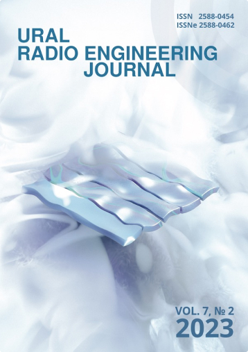
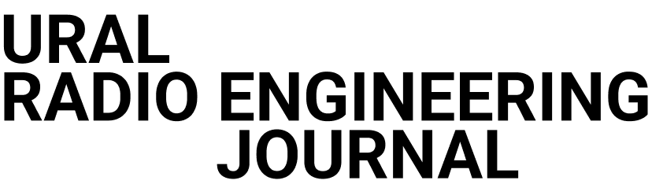
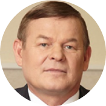
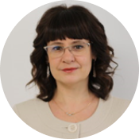

-

ISSN онлайн-версии:2588-0462
ISSN печатной версии:2588-0454
-
 Главный редактор
Князев Сергей Тихонович УрФУ им. первого Президента России Б. Н. Ельцина
Зав. редакцией
Папуловская Наталья Владимировна УрФУ им. первого Президента России Б. Н. Ельцина
Редакционный совет